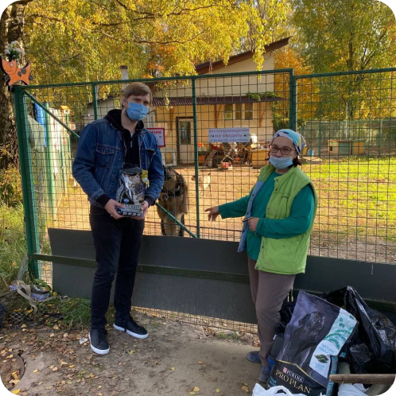
Приют
«Галкино подворье»
Наша первая поездка в приют. Времена
ковидные, на территорию нас не пустили,
но много полезностей мы привезли
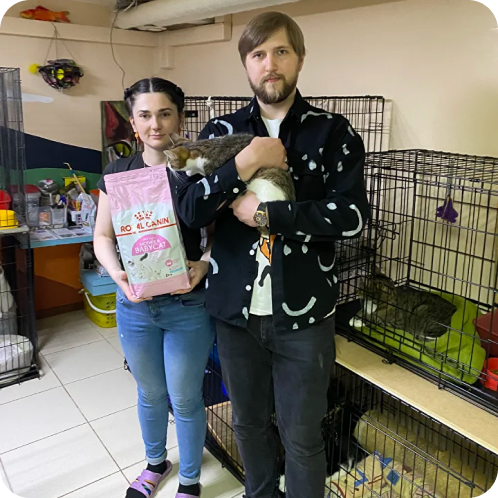
Мини-приют для котеек
«Убежище»
«Размер не имеет значения!» =) — этим
мы руководствовались, когда посещали этот
приют
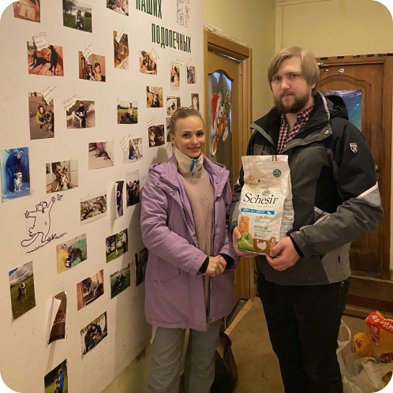
СПб
Приют «Ржевка»
Самый большой приют из тех, что мы посещали.
Очень хорошее и просторное место
для пушистых друзей
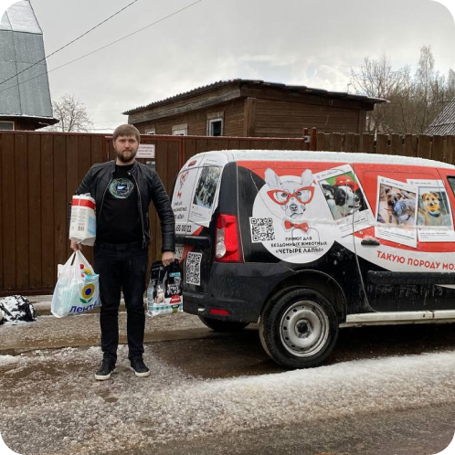
СПб
Приют «4 Лапы»
В приюте проживают более 90 собак.
Собаки чистые, упитанные и очень активные.
Ушли в обнимашках и даже целовашках
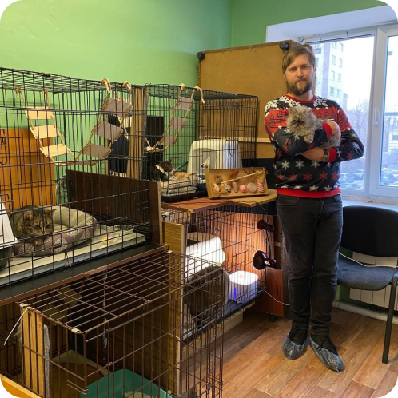
АНО
Приют «Котланд — Ярд»
Под конец 2022 мы посетили уютный городской
приют, в котором четвероногим пушистикам
там классно и комфортно
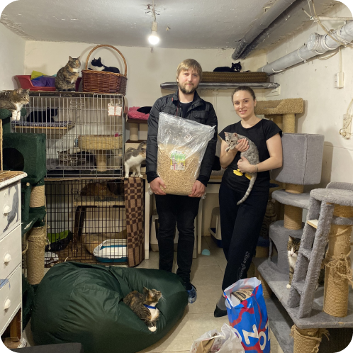
АНО «Центральный
приют кошек»
Небольшой городской приют для котеек.
Кошки там ухоженные, классные и очень быстро
находят себе дом
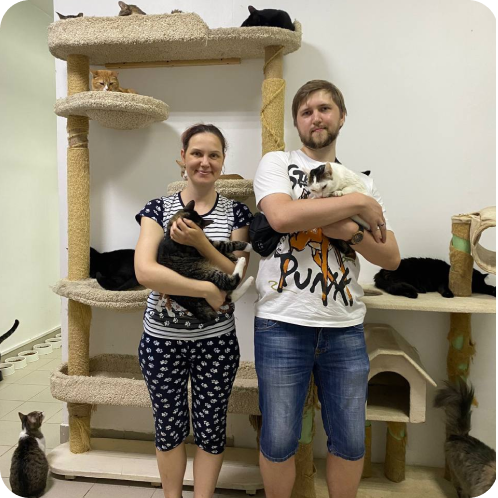
Мини-приют
«Маруся и хвостики»
Маленький и уютный приют для пушистых хвостиков, где животным не нужны клетки, они все ласковые и добрые
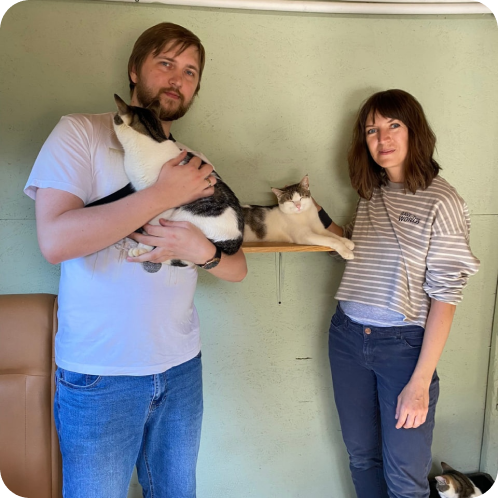
СПб
Приют «Друг»
В этом приюте узнали, что иногда животным
необходима социализация, что комфортно войти
в отношения с новыми хозяевыми
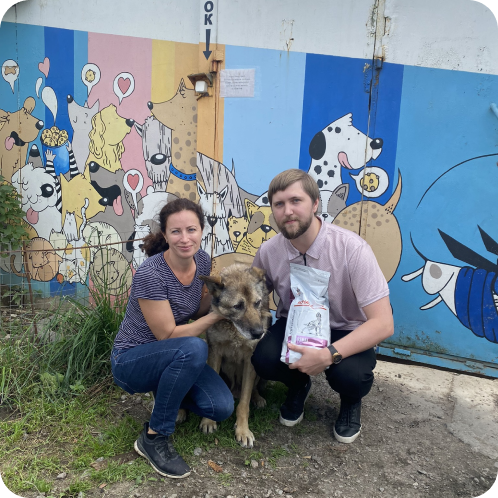
Приют для собак
«Ильинка»
Мы решили посетить этот приют, потому
что он недавно пострадал от пожара, и им была
необходима любая помощь
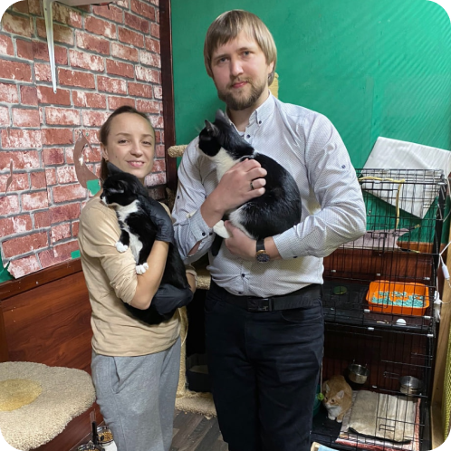
Кошачий приют
«Гараж»
Это наш юбилейный (10-ый) приют =)
Городской мини-приют с ухоженными
и активными животными
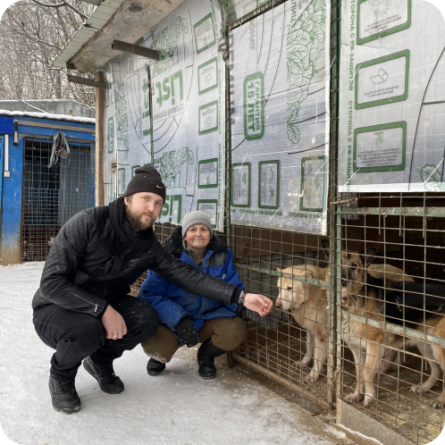
г. Кронштадт
Приют «Ковчег»
В этом приюте уже 10 лет спасают как собак,
так и кошек, ответственно подходя к содержанию
и лечению животных
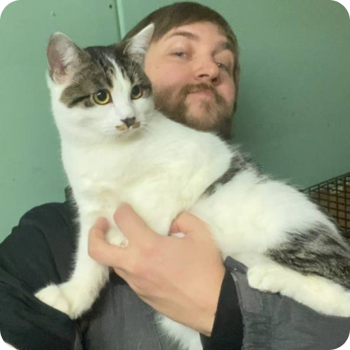
АНО
Приют «Котланд — Ярд»
Спустя почти год мы снова посетили этот приют,
но уже с коллегами по работе.
А тем временем приют сменил место обитания
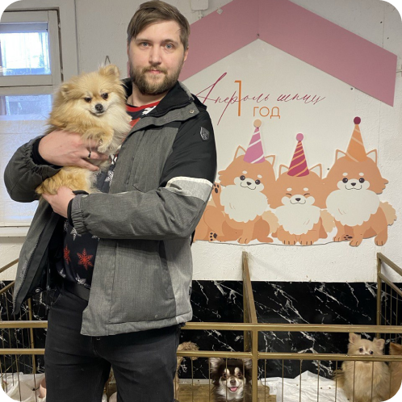
АНО
Приют «Апероль шпиц»
Это приют для маленьких пород — шпицы, той-
терьеры, чихуахуа и другие крохи.
Здесь бережно относятся к своим «булочкам»
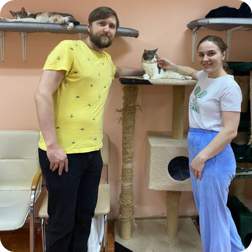
АНО «Центральный
приют кошек»
Спустя 1,5 года мы снова тут =)
Приют переехал на новое место, но котейкам
там всё также тепло и уютно